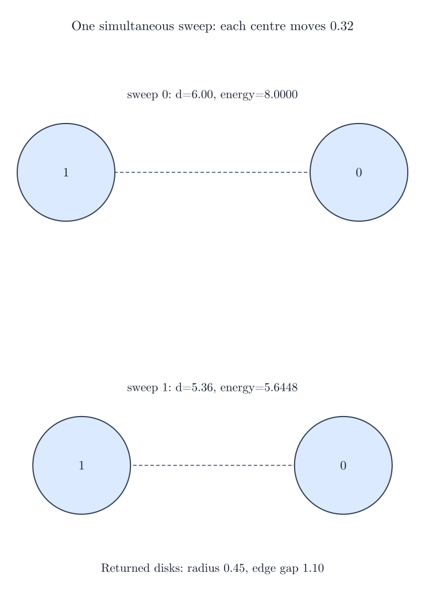
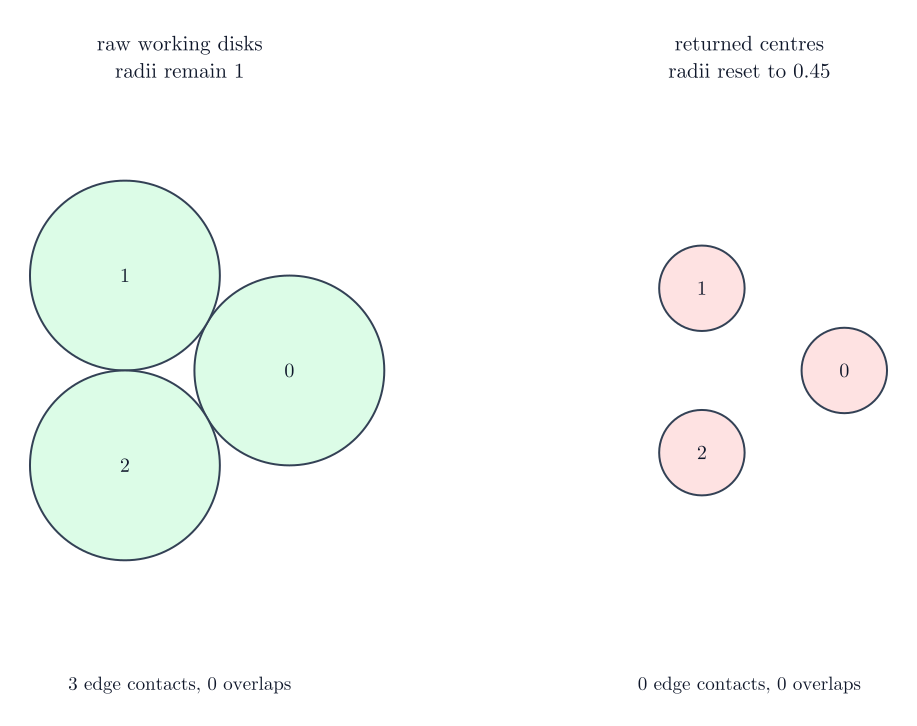
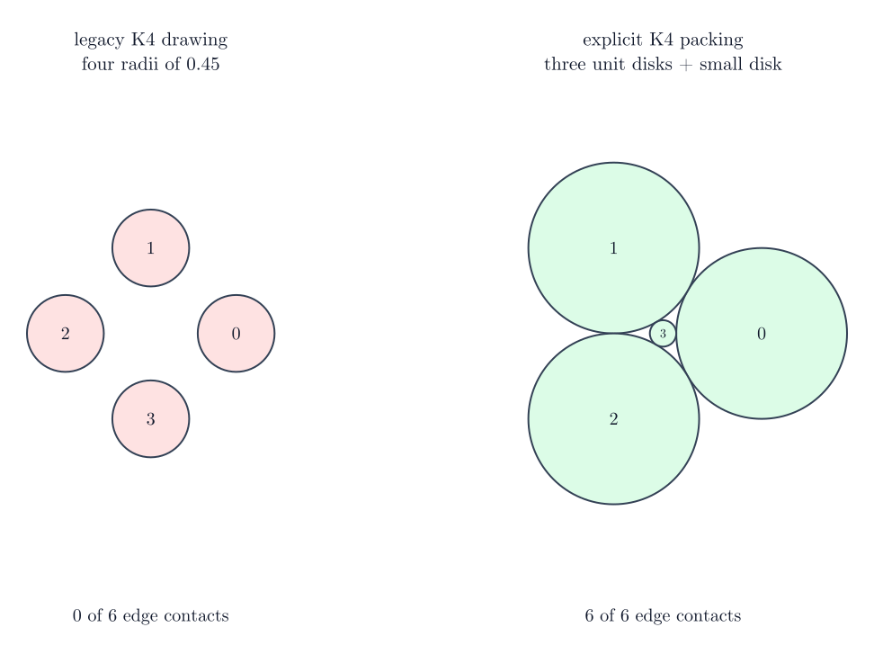
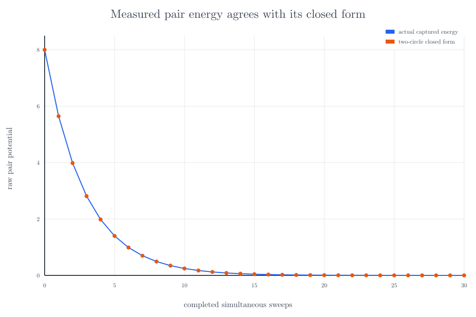

Circle Layouts: Pair Relaxation and Measured Contacts
Abstract
Given an undirected graph, draw disks whose interiors do not overlap and whose tangencies represent its edges. Avoiding overlap alone is insufficient: every edge must also be a contact, and every nonedge must avoid contact. We inspect datamunge's legacy equal-centre relaxation, retain the original triangle, and measure what the returned disks actually represent. Native snapshots expose the simultaneous pair updates, while separate disk diagnostics reveal lost tangencies and an overlapping eight-cycle. An explicit variable-radius K4 packing and a two-circle closed form provide independent geometric controls.
One actual pair update
The legacy function is called circle_packing_layout, but its numerical task is more modest than constructing a graph's circle packing. It starts unit-radius working disks on a circle of radius three. An edge attracts its centres towards distance two; a nonedge repels centres closer than 2.15. Every pair reads the same old positions, and all accumulated displacements are committed together. This is a Jacobi sweep, with default step size η=0.08.
For two vertices joined by one edge, the initial distance is six. Each centre moves η(6−2)=0.32 towards the other, leaving distance 5.36. The two rows below are separate time panels in identical coordinate units; vertical separation is only presentation. The figure uses actual captured centres and unit radii.
#include <dm/dm.hpp>
int main() {
std::filesystem::create_directories("build");
dm::algorithms::CirclePackingOptions options;
options.iterations=1;options.snapshot_stride=1;
const auto trace=dm::algorithms::circle_packing_trace(2,{{0,1}},options);
dm::graphics::Diagram figure(85,1100);
dm::graphics::DiagramStroke line;line.dashed=true;line.color={100,116,139};
std::print("| actual sweep | centre distance | measured energy | maximum movement |\n| ---: | ---: | ---: | ---: |\n");
for(std::size_t row=0;row<trace.frames.size();++row) {
const auto& frame=trace.frames[row];const double y=3-6.0*row;
const auto a=frame.circles[0].center,b=frame.circles[1].center;
const auto distance=std::hypot(a.x-b.x,a.y-b.y);
std::print("| {} | {:.4f} | {:.4f} | {:.4f} |\n",frame.iteration,distance,frame.energy,frame.max_displacement);
figure.path({{a.x,a.y+y},{b.x,b.y+y}},line);
for(std::size_t vertex=0;vertex<frame.circles.size();++vertex) {
const auto& circle=frame.circles[vertex];
figure.ellipse({circle.center.x,circle.center.y+y},circle.radius,circle.radius,{219,234,254})
.text({circle.center.x,circle.center.y+y},std::to_string(vertex),22);
}
figure.text({0,y+1.6},std::format("sweep {}: d={:.2f}, energy={:.4f}",frame.iteration,distance,frame.energy),21);
}
figure.text({0,6},"One simultaneous sweep: each centre moves 0.32",23)
.text({0,-5.1},std::format("Returned disks: radius 0.45, edge gap {:.2f}",trace.output_metrics.min_gap),21)
.save_svg("build/circle_pair_step.svg");
if(std::fabs(trace.frames.back().energy-5.6448L)>1e-10L)return 1;
}| actual sweep | centre distance | measured energy | maximum movement |
|---|---|---|---|
| 0 | 6.0000 | 8.0000 | 0.0000 |
| 1 | 5.3600 | 5.6448 | 0.3200 |

The force rule and its limits
For raw centre distance d_uv, let the edge target be 2 and the nonedge clearance target be 2.15. The measured potential is
For each active pair, with target a_uv, the kernel adds
Nonedges at or above their clearance target contribute zero. The implementation uses max(1e−9,d_uv) in the force formula, including its target difference; the gradient interpretation above applies away from that floor. Coincident centres have zero direction and need not separate. Fixed steps have no line search, adaptive damping, early convergence test or universal energy-descent guarantee. Coordinates and aggregates use checked widened arithmetic before finite-double coordinate storage. That can change last bits relative to the old unchecked path.
All endpoints are validated. Self-loops are ignored, and duplicate or reversed edges collapse to one unweighted edge. There is no planarity check. In particular, these updates do not implement the variable-radius construction underlying the circle-packing theorem for finite simple planar graphs.
The original triangle: raw tangencies disappear at output
For three mutually adjacent vertices, symmetry keeps the centres on an equilateral triangle. At the raw limit their centre distance is two, and the unit working disks touch. The API then subtracts the mean, divides centres by their largest centred norm s, and resets every radius to 0.45:
A raw edge with distance two therefore has output gap 2/s−0.9. This is not a similarity transformation of the disks, because radii are not scaled with the centres. For the triangle s=2/√3, giving returned centre distance √3 and a positive gap √3−0.9≈0.832050808. The original report checked only non-overlap; that check cannot establish the edge tangencies it claimed.
#include <dm/dm.hpp>
int main() {
std::filesystem::create_directories("build");
const std::vector<std::pair<std::size_t,std::size_t>> edges{{0,1},{1,2},{2,0}};
const auto trace=dm::algorithms::circle_packing_trace(3,edges);
const auto& raw=trace.frames.back().circles;
const auto raw_metrics=dm::algorithms::circle_packing_metrics(raw,edges);
std::print("| vertex | returned x | returned y | returned radius |\n| ---: | ---: | ---: | ---: |\n");
for(std::size_t i=0;i<trace.circles.size();++i) {
const auto& c=trace.circles[i];std::print("| {} | {:.6f} | {:.6f} | {:.2f} |\n",i,c.center.x,c.center.y,c.radius);
}
std::print("\n| geometry | overlaps | edge contacts / 3 | minimum gap | edge stress |\n| :--- | ---: | ---: | ---: | ---: |\n");
dm::graphics::Diagram figure(95,1100);
for(int panel=0;panel<2;++panel) {
const auto& circles=panel?trace.circles:raw;
const auto m=panel?trace.output_metrics:raw_metrics;const double shift=6.0*panel;
std::print("| {} | {} | {} | {:.9f} | {:.9f} |\n",panel?"returned disks":"raw working disks",m.overlapping_pairs,m.edge_contacts,m.min_gap,m.edge_stress);
for(std::size_t i=0;i<circles.size();++i) {
const auto& c=circles[i];
figure.ellipse({c.center.x+shift,c.center.y},c.radius,c.radius,panel?dm::RGB{254,226,226}:dm::RGB{220,252,231})
.text({c.center.x+shift,c.center.y},std::to_string(i),20);
}
figure.text({shift,3.3},panel?"returned centres\nradii reset to 0.45":"raw working disks\nradii remain 1",21)
.text({shift,-3.3},std::format("{} edge contacts, {} overlaps",m.edge_contacts,m.overlapping_pairs),19);
}
figure.save_svg("build/circle_triangle.svg");
std::print("\nActual normalization scale: {:.12f}. Completed sweeps: {}.\n",trace.normalization_scale,trace.work.completed_iterations);
if(raw_metrics.edge_contacts!=3 || trace.output_metrics.edge_contacts!=0 || trace.output_metrics.overlapping_pairs!=0)return 1;
}| vertex | returned x | returned y | returned radius |
|---|---|---|---|
| 0 | 1.000000 | -0.000000 | 0.45 |
| 1 | -0.500000 | 0.866025 | 0.45 |
| 2 | -0.500000 | -0.866025 | 0.45 |
| geometry | overlaps | edge contacts / 3 | minimum gap | edge stress |
|---|---|---|---|---|
| raw working disks | 0 | 3 | 0.000000000 | 0.000000000 |
| returned disks | 0 | 0 | 0.832050808 | 2.076925639 |
Actual normalization scale: 1.154700538379. Completed sweeps: 1000.

A planar graph that needs unequal radii: K4
Four pairwise tangent equal positive disks cannot lie in the plane. Three centres would form an equilateral triangle of side 2r; the only point equidistant from all three is its circumcentre, at distance 2r/√3, rather than the required 2r. Thus an equal-radius restriction cannot represent all planar graphs by tangency. This is a geometric obstruction, independent of iteration count.
K4 has a simple unequal-radius control. Put three unit disks at (R,0), (−R/2,1), (−R/2,−1), where R=2/√3. Their pairwise distances are two. A fourth disk at the origin with positive radius R−1 touches all three because its centre distance R equals the sum of radii 1+(R−1). All six edges are contacts with no interior overlaps. These explicit coordinates are a mathematical control, not a new general-purpose packing algorithm.
#include <dm/dm.hpp>
int main() {
std::filesystem::create_directories("build");
const std::vector<std::pair<std::size_t,std::size_t>> edges{{0,1},{0,2},{0,3},{1,2},{1,3},{2,3}};
const double radius=2/std::sqrt(3.0);
const std::vector<dm::algorithms::Circle2D> control{{{radius,0},1},{{-radius/2,1},1},{{-radius/2,-1},1},{{0,0},radius-1}};
const auto native=dm::algorithms::circle_packing_layout(4,edges);
dm::graphics::Diagram figure(95,1100);
std::print("| K4 geometry | overlaps | edge contacts / 6 | extra contacts | zero radii | edge stress |\n| :--- | ---: | ---: | ---: | ---: | ---: |\n");
for(int panel=0;panel<2;++panel) {
const auto& circles=panel?control:native;
const auto m=dm::algorithms::circle_packing_metrics(circles,edges);const double shift=6.0*panel;
std::print("| {} | {} | {} | {} | {} | {:.9f} |\n",panel?"explicit unequal radii":"legacy returned disks",m.overlapping_pairs,m.edge_contacts,m.nonedge_contacts,m.zero_radii,m.edge_stress);
if(panel && (m.edge_contacts!=6 || m.overlapping_pairs!=0 || m.zero_radii!=0))return 1;
for(std::size_t i=0;i<circles.size();++i) {
const auto& c=circles[i];
figure.ellipse({c.center.x+shift,c.center.y},c.radius,c.radius,panel?dm::RGB{220,252,231}:dm::RGB{254,226,226})
.text({c.center.x+shift,c.center.y},std::to_string(i),i==3 && panel?14:20);
}
figure.text({shift,3.3},panel?"explicit K4 packing\nthree unit disks + small disk":"legacy K4 drawing\nfour radii of 0.45",21)
.text({shift,-3.3},std::format("{} of 6 edge contacts",m.edge_contacts),20);
}
figure.save_svg("build/circle_k4_contacts.svg");
}| K4 geometry | overlaps | edge contacts / 6 | extra contacts | zero radii | edge stress |
|---|---|---|---|---|---|
| legacy returned disks | 0 | 0 | 0 | 0 | 3.477662351 |
| explicit unequal radii | 0 | 6 | 0 | 0 | 0.000000000 |

The diagnostic tolerance is an absolute gap tolerance, default 1e−9. With gap=d−r_i−r_j, overlap means gap<−tolerance, and contact means |gap|≤tolerance. Counts may tolerate tiny overlaps; they do not certify an exact-real packing. Edge stress sums squared edge gaps, and overlap penalty sums squared negative gaps without tolerance clipping. Zero radii are counted separately, while negative radii and nonfinite inputs reject.
Checking the relaxation against a closed form
For the separated two-circle example, a sweep gives d_(t+1)=(1−2η)d_t+4η. With η=0.08 and d_0=6,
This formula describes this symmetric two-vertex trajectory, not arbitrary graphs. The next program compares captured energies directly to it. Ordinary linear axes include the full measured energy range; there is no logarithmic floor. After output normalization the two returned centres are always distance two apart here, so the output gap stays 1.1 regardless of the raw improvement.
#include <dm/dm.hpp>
int main() {
std::filesystem::create_directories("build");
dm::algorithms::CirclePackingOptions options;options.iterations=30;options.snapshot_stride=1;
const auto trace=dm::algorithms::circle_packing_trace(2,{{0,1}},options);
std::vector<double> iteration,measured,theory;
std::print("| sweep | actual distance | measured energy | closed-form energy |\n| ---: | ---: | ---: | ---: |\n");
for(const auto& frame:trace.frames) {
const auto expected=8*std::pow(0.84L,2*frame.iteration);
if(std::fabs(frame.energy-expected)>1e-10L)return 1;
iteration.push_back(frame.iteration);measured.push_back(frame.energy);theory.push_back(expected);
if(frame.iteration==0 || frame.iteration==1 || frame.iteration==5 || frame.iteration%10==0) {
const auto a=frame.circles[0].center,b=frame.circles[1].center;
std::print("| {} | {:.9f} | {:.9f} | {:.9f} |\n",frame.iteration,std::hypot(a.x-b.x,a.y-b.y),frame.energy,expected);
}
}
auto plot=dm::graphics::RPlot::create();
plot.line(iteration,measured,"actual",{37,99,235},2)
.points(iteration,theory,"closed form",{234,88,12},4)
.legend({"actual captured energy","two-circle closed form"},{{37,99,235},{234,88,12}})
.title("Measured pair energy agrees with its closed form")
.x_label("completed simultaneous sweeps").y_label("raw pair potential")
.x_limits(0,30).y_limits(0,8.5).save_svg("build/circle_energy.svg");
options.iterations=1;options.step_size=2;
const auto overshoot=dm::algorithms::circle_packing_trace(2,{{0,1}},options);
std::print("\nAt step size 2, actual energy rises from {:.1f} to {:.1f}; returned gap remains {:.1f}.\n",overshoot.frames.front().energy,overshoot.frames.back().energy,overshoot.output_metrics.min_gap);
if(overshoot.frames.back().energy<=overshoot.frames.front().energy)return 1;
}| sweep | actual distance | measured energy | closed-form energy |
|---|---|---|---|
| 0 | 6.000000000 | 8.000000000 | 8.000000000 |
| 1 | 5.360000000 | 5.644800000 | 5.644800000 |
| 5 | 3.672847770 | 1.399209830 | 1.399209830 |
| 10 | 2.699604915 | 0.244723519 | 0.244723519 |
| 20 | 2.122361759 | 0.007486200 | 0.007486200 |
| 30 | 2.021401222 | 0.000229006 | 0.000229006 |
At step size 2, actual energy rises from 8.0 to 32.0; returned gap remains 1.1.

Work caps, malformed inputs and a returned overlap
Dense adjacency uses O(V²) memory, including for sparse graphs. Ordinary work is O(E+V²+TV²), with actual T=0 for empty or singleton inputs. A trace adds O(FV) owned snapshot storage and O(FV²) measurements for F recorded frames. Snapshots include the initial state, every positive stride, and the final state without duplicating a stride boundary. Neither a zero step nor numerical stagnation skips requested sweeps when V≥2.
The positive pair cap covers relaxation pair inspections only, while the positive snapshot cap covers tracing only. Zero caps mean unlimited. Complete pair, update and snapshot forecasts are checked before dense allocation, after the entire endpoint input and option values have been validated. Failed caps, range checks and allocations expose no partial result. Numeric updates that cannot fit finite coordinates throw, rather than exporting infinities or NaNs.
#include <dm/dm.hpp>
int main() {
dm::algorithms::CirclePackingOptions options;
options.iterations=4;options.snapshot_stride=2;options.max_pair_visits=12;options.max_snapshots=3;
const auto trace=dm::algorithms::circle_packing_trace(3,{{0,1},{1,2},{2,0}},options);
std::print("Actual snapshot iterations:");for(const auto& frame:trace.frames)std::print(" {}",frame.iteration);
std::print(".\nRelaxation pairs {}; position commits {}; raw diagnostic pairs {}; output diagnostic pairs {}.\n\n",trace.work.pair_visits,trace.work.position_updates,trace.work.frame_pair_visits,trace.work.output_pair_visits);
bool pair_rejected=false,snapshots_rejected=false,invalid_first=false,huge_rejected=false;
options.max_pair_visits=11;
try { (void)dm::algorithms::circle_packing_trace(3,{{0,1},{1,2},{2,0}},options); }
catch(const std::length_error&) { pair_rejected=true; }
options.max_pair_visits=12;options.max_snapshots=2;
try { (void)dm::algorithms::circle_packing_trace(3,{{0,1}},options); }
catch(const std::length_error&) { snapshots_rejected=true; }
options.max_pair_visits=1;
try { (void)dm::algorithms::circle_packing_trace(3,{{0,1},{0,3}},options); }
catch(const std::invalid_argument&) { invalid_first=true; }
try { (void)dm::algorithms::circle_packing_trace(1'000'000'000,{},options); }
catch(const std::length_error&) { huge_rejected=true; }
std::print("| preflight check | expected rejection observed |\n| :--- | :--- |\n| pair cap one below exact | {} |\n| frame cap one below exact | {} |\n| invalid trailing endpoint before cap | {} |\n| huge pair work before allocation | {} |\n",pair_rejected,snapshots_rejected,invalid_first,huge_rejected);
options={};options.iterations=std::numeric_limits<std::size_t>::max();options.max_pair_visits=1;options.max_snapshots=1;
const auto empty=dm::algorithms::circle_packing_trace(0,{},options);
const auto single=dm::algorithms::circle_packing_trace(1,{},options);
std::print("\nEmpty/singleton completed sweeps: {}/{}; singleton returned radius {:.2f}.\n",empty.work.completed_iterations,single.work.completed_iterations,single.circles[0].radius);
std::vector<std::pair<std::size_t,std::size_t>> cycle;
for(std::size_t i=0;i<8;++i)cycle.emplace_back(i,(i+1)%8);
const auto disks=dm::algorithms::circle_packing_layout(8,cycle);
const auto measured=dm::algorithms::circle_packing_metrics(disks,cycle);
std::print("Eight-cycle returned overlaps: {}; edge contacts: {}; minimum gap: {:.9f}.\n",measured.overlapping_pairs,measured.edge_contacts,measured.min_gap);
if(!pair_rejected || !snapshots_rejected || !invalid_first || !huge_rejected || measured.overlapping_pairs!=8)return 1;
}Actual snapshot iterations: 0 2 4. Relaxation pairs 12; position commits 12; raw diagnostic pairs 9; output diagnostic pairs 3.
| preflight check | expected rejection observed |
|---|---|
| pair cap one below exact | true |
| frame cap one below exact | true |
| invalid trailing endpoint before cap | true |
| huge pair work before allocation | true |
Empty/singleton completed sweeps: 0/0; singleton returned radius 0.45. Eight-cycle returned overlaps: 8; edge contacts: 0; minimum gap: -0.134633135.
For the symmetric eight-cycle, normalized neighbours are separated by 2sin(π/8), below the output diameter 0.9. Hence each adjacent returned pair overlaps by about 0.134633135, even though this graph is planar. This is a direct counterexample to a general non-overlap guarantee for the current output.
Canonical tests compare every simple graph through five vertices (1,100 graphs) and 1,000 seeded random multigraph/control combinations with an independent double-arithmetic Jacobi implementation. Closed forms check the two-circle and triangle trajectories; the explicit K4 disks check positive-radius contacts. Further cases cover duplicate/reversed edges, ignored loops, tolerance semantics, snapshot ownership, exact/one-below caps, huge preflight counts, arithmetic range, zero sweeps and zero step. All fourteen new cases pass address and undefined- behaviour sanitizers. These checks establish the stated kernel and measurement contracts, without claiming that arbitrary outputs solve a packing problem.
What this analysis establishes
The native API now distinguishes actual raw relaxation from returned disks, reports contact errors, and bounds requested pair work and recording. The original triangle remains a deterministic drawing, with its missing tangencies made visible. The K4 control explains why unequal radii matter; the eight-cycle shows that returned overlaps are also possible. A true circle-packing solver would require a different construction and its own correctness contract.
References
- K. Stephenson (2005), Introduction to Circle Packing: The Theory of Discrete Analytic Functions, Cambridge University Press. The author's overview at https://www.circlepack.com/ describes prescribed tangencies and varying sizes. This is background for the geometric problem, not the algorithm implemented by datamunge's legacy equal-centre relaxation.
- Canonical implementation and contracts: include/datamunge/algorithms/circle_packing.hpp, src/datamunge/algorithms/circle_packing.cpp and the shared include/datamunge/algorithms/layout_geometry.hpp. The complete C++ programs above are the editable sources for every figure.